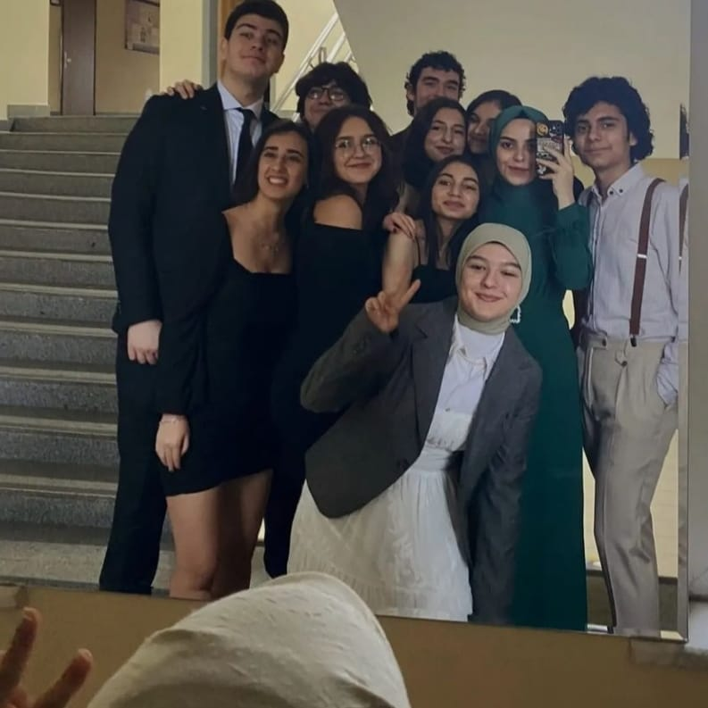

HAKKIMDA


Enstrüman Çalmak
Enstrüman olarak ukulele ve piyano/org çalıyorum. Müzik iyi hissetmek istediğimde başvurduğum bir dal. Sıkıldığımda ve hiçbir şey yapmak istemediğimde dahil ukulelemi yerinden alıp bildiğim şarkılardan çalabiliyorum daha ne isteyebilirim! Ayrıca taşınması kolay küçük bir alet olduğu için de Sakarya Üniversitesi'nin kampüsünde arkadaşlarıma da serenat yapabiliyorum. Çaldığım bazı şarkıların olduğu çalma listesini görmek için tıkla!
Bilim Kurgu Okumak
Kitap okumak da beni bir süre hayatın yoğunluğundan çekip çıkarıyor ve bana iyi geliyor. Özellikle bilim kurgu okumak, Sapanca yurdumdan kampüse gelirken geçirdiğim 1 saati hiç hissettirmiyor. Kitap benim yolculuk arkadaşım gibi oluyor. bir an önce okumak, tüm hikaye akışını öğrenmek istiyorum. Hele de benim tarzımda bir kitapsa o haftam harika geçecek demektir.
Yağlı Boya Yapmak
Küçüklüğümden beri severek resim yaparım. Özellikle ortaokul ve lisede yağlı boya çok yapardım fakat maalesef geçtiğim sınav süreciyle beraber uzun bir ara verdim. Bu da elime tekrar fırça almaktan korkar hale getirdi çünkü bu yetenek durdurulup kaldığı yerden devam ettirilmiyor...

Arkadaşlarımla Vakit Geçirmek
E tabii en çok kendimle vakit geçirmeyi sevsem de arkadaşlarımla beraber olduğumda da ayrı bir zevkli oluyor. Bir şeyler paylaşmak, dert dinlemek, plan yapmak, anı biriktirmek hoş şeyler! Hepimiz birbirimizin biriktirmek anı belleğiyiz.